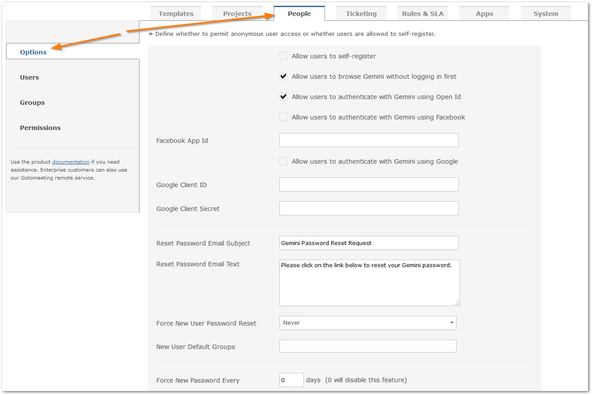
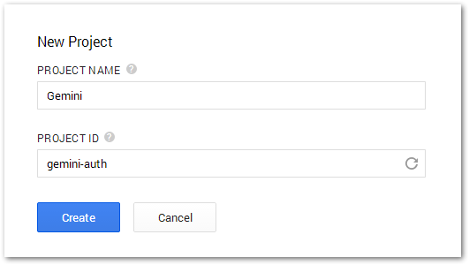
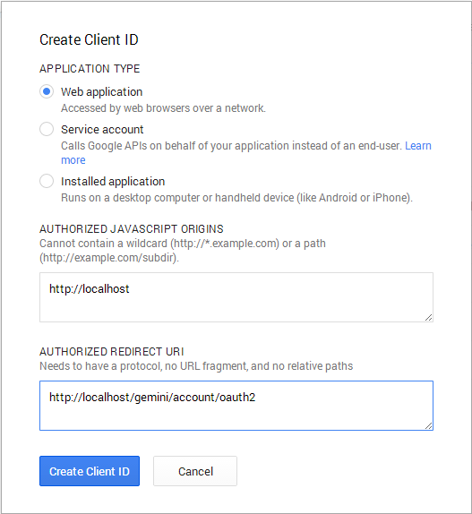
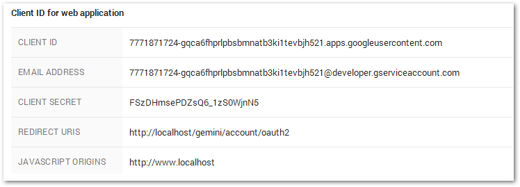
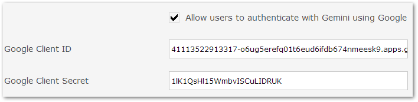
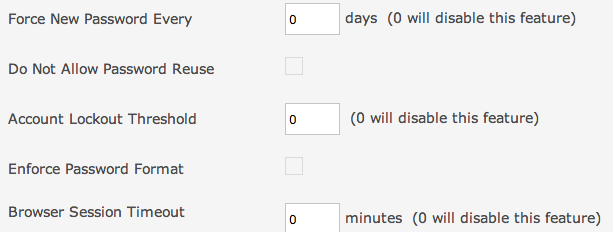

Gemini has a variety of options for modifying the security of your installation. Gemini allows for the use of social media APIs, such as Facebook and Open ID. You may also modify and change additional security options, such as password policies, and user groups that are assigned to the Portal Group.

Check the 'Allow users to self-register' check box if you want new visitors to the Gemini site to be able to register themselves. This option does not allow such self-registered users to control their permissions and their access will be controlled by the New User Default Groups that are also defined on this page.
Check the 'Allow users to browse Gemini without logging on first' to allow unauthenticated access to your Gemini site. Unauthenticated users will be given permissions associated with the user group 'Everyone', which is different from the user group 'Everyone (Authenticated)', allowing you to control what they can see and do on the site.
Check this option if you want to allow users to authenticate themselves using Open Id standards. If enabled, users will be able to log on using their Yahoo and OpenID credentials.
Check this option if you want to allow users to authenticate themselves using faceboook. To use this option, you must create/enter Gemini's facebook app id (see facebook documentation for more on their authentication with 3rd party apps).
Check this option if you want to allow users to authenticate themselves using Google. To activate Google Authentication for Gemini, follow these steps:
You can obtain the OAuth 2.0 credentials Client ID and Client Secret from https://console.developers.google.com.




Google authentication OAuth 2.0 is backwards compatible and will recognize your already registered user.
You can set the password policy in terms of re-use, expiry, format and re-tries attempts.

The Portal Group is an assigned group of users that are restricted to the 'Can Only View Own Items' permissons setting. It is advised to assign the Portal Group as an external group.
The following video will help provide an overview of security options and the Portal Group within Gemini.